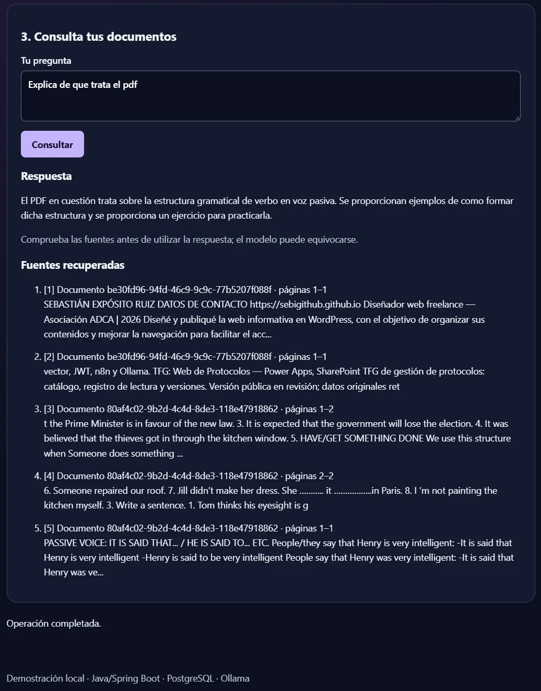

01 · Knowledge Ops Hub
Base documental consultable con RAG local.
Pipeline local que transforma PDFs en respuestas con fuentes y automatiza la ingesta con n8n.
Ver repositorioDisponible para oportunidades
Desarrollador Full-Stack · Automatización e IA aplicada
Construyo herramientas que ordenan información, automatizan procesos y resuelven problemas reales.
Sevilla · Presencial, híbrido o remoto · Incorporación inmediata
Trabajo seleccionado
Tres casos con alcance, decisiones técnicas y evidencia. Sin rellenar: cada pieza resuelve un problema diferente.

01 · Knowledge Ops Hub
Pipeline local que transforma PDFs en respuestas con fuentes y automatiza la ingesta con n8n.
Ver repositorioArchivo
Perfil
Técnico Superior en DAM con experiencia práctica en soporte IT, desarrollo de soluciones internas y documentación. Me interesa el punto donde una aplicación deja de ser solo código y empieza a ahorrar trabajo a alguien.
Tecnologías aplicadas
Trayectoria
Contacto
Estoy abierto a oportunidades de desarrollo, automatización y soporte de aplicaciones.